Chapter 11 Inference with mathematical models
In Chapters 9 and 10 questions about population parameters were addressed using computational techniques through simulation. With randomization tests, the data were permuted assuming the null hypothesis. With bootstrapping, the data were resampled in order to measure the variability. In many cases (indeed, with sample proportions), the variability of the statistic can be described by the computational method (as in previous chapters) or by a mathematical formula (as in this chapter).
The normal distribution is presented here to describe the variability associated with sample proportions which are taken from either repeated samples or repeated experiments. The normal distribution is quite powerful in that it describes the variability of many different statistics, and we will encounter the normal distribution throughout the remainder of the book.
For now, however, focus is on the parallels between how data can provide insight about a research question either through computational methods or through mathematical models.
There are two approaches to modeling how a statistic, such as a sample proportion, may vary from sample to sample. In the Martian alphabet example, we used a simulation-based approach to model this variability—simulating a distribution of sample proportions (Figure 9.2). Simulation-based methods include the randomization tests and bootstrapping methods discussed in Chapters 9 and 10. We can also use a theory-based approach—one which makes use of mathematical modeling—and involves the normal and \(t\) probability distributions. We will introduce the normal distribution in this chapter, focusing on how we can use the normal distribution to model a distribution of statistics. The \(t\) distribution will be introduced in later chapters.
All of the theory-based methods discussed in this book work (under certain conditions) because of a very important theorem in Statistics called the Central Limit Theorem.
11.1 Central Limit Theorem
In recent chapters, we encountered several case studies. While they differ in the settings, in their outcomes, and in the technique we have used to analyze the data, they all have something in common: the general shape of the distribution of the statistics (called the sampling distribution). You may have noticed that the distributions were mostly symmetric and bell-shaped.
Sampling distribution.
A sampling distribution is the distribution of all possible values of a sample statistic from samples of a given sample size from a given population. We can think about the sample distribution as describing as how sample statistics (e.g., the sample proportion \(\hat{p}\) or the sample mean \(\bar{y}\)) vary from one study to another.
A sampling distribution is contrasted with a data distribution91 which shows the variability of the observed data values. The data distribution can be visualized from the observations themselves. However, because a sampling distribution describes sample statistics computed from many studies, it cannot be visualized directly from a single data set. Instead, we use either computational or mathematical structures to estimate the sampling distribution and hence to describe the expected variability of the sample statistic in repeated studies.
Figure 11.1 shows the null distributions in each of the two case studies where we ran 10,000 simulations. Note that the null distribution is the sampling distribution of the statistic created under the setting where the null hypothesis is true. Therefore, the null distribution will always be centered at the value of the parameter given by the null hypothesis.
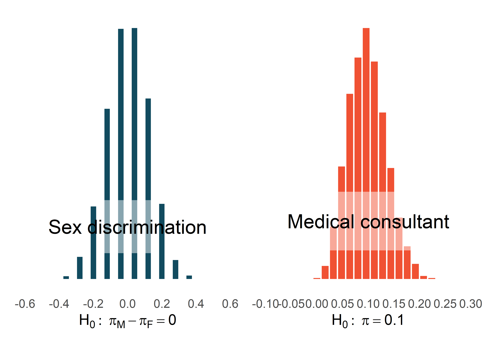
Figure 11.1: The null distribution for each of the two case studies presented previously. Note that the center of each distribution is given by the value of the parameter set in the null hypothesis.
Describe the shape of the distributions and note anything that you find interesting.92
The case study for the medical consultant has a slight right skew, whereas the null distribution simulated in the sex discrimination case study is symmetric. As we observed in Chapter 1, it’s common for distributions to be skewed or contain outliers. However, the null distributions we have so far encountered have all looked somewhat similar and, for the most part, symmetric. They all resemble a bell-shaped curve. The bell-shaped curve similarity is not a coincidence, but rather, is guaranteed by mathematical theory.
Central Limit Theorem for proportions.
If we look at a proportion93 and the scenario satisfies certain conditions, then the sample proportion will appear to follow a bell-shaped curve called the normal distribution.
An example of a perfect normal distribution is shown in Figure 11.2. Imagine laying a normal curve over each of the two null distributions in Figure 11.1. While the mean (center) and standard deviation (width or spread) may change for each plot, the general shape remains roughly intact.
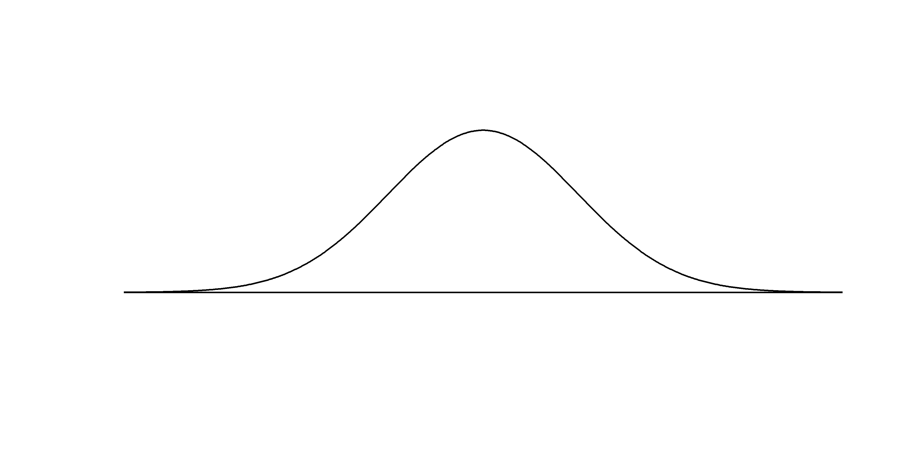
Figure 11.2: A normal curve.
Mathematical theory guarantees that if repeated samples are taken a sample proportion or a difference in sample proportions will follow something that resembles a normal distribution when certain conditions are met. (Note: we typically only take one sample, but the mathematical model lets us know what to expect if we had taken repeated samples.) These conditions fall into two general categories describing the independence between observations and the need to take a sufficiently large sample size.
Observations in the sample are independent. Independence must be assessed based on the study design and source of the data. Look for groups or clusters of observations that might be similar within the groups and different between. The most common violation of this would be to take more than observation from the same subject, say at different times.
The sample is large enough. The sample size cannot be too small. What qualifies as “small” differs from one context to the next, and we’ll provide suitable guidelines for proportions in Chapters 14 and 15.
It is quite amazing that, if the sample size is large enough, something like a sample proportion—a statistic that summarizes a categorical variable—will have a bell-shaped sampling distribution!
So far we have had no need for the normal distribution. We’ve been able to answer our questions somewhat easily using simulation techniques. However, soon this will change. Simulating data can be non-trivial. For example, some of the scenarios encountered in Chapter 7 where we introduced regression models with multiple predictors would require complex simulations in order to make inferential conclusions. Instead, the normal distribution and other distributions like it offer a general framework for statistical inference that applies to a very large number of settings.
Technical Conditions.
In order for the normal approximation to describe the sampling distribution of the sample proportion as it varies from sample to sample, two conditions must hold. If these conditions do not hold, it is unwise to use the normal distribution (and related concepts like Z scores, probabilities from the normal curve, etc.) for inferential analyses.
- Independent observations: Measurements taken on one individual should give you no information about measurements taken on another.
- Large enough sample: For proportions, at least 10 expected successes and 10 expected failures in the sample.
11.2 Normal distributions
Among all the distributions we see in statistics, one is overwhelmingly the most common. The symmetric, unimodal, bell curve is ubiquitous throughout statistics. It is so common that people know it as a variety of names including the normal curve, normal model, or normal distribution.94 Under certain conditions, sample proportions, sample means, and sample differences can be modeled using the normal distribution—the basis for our theory-based inference methods. Additionally, some variables such as SAT scores and heights of US adult males closely follow the normal distribution.
Normal distribution facts.
Many summary statistics and variables are nearly normal, but none are exactly normal. Thus the normal distribution, while not perfect for any single problem, is very useful for a variety of problems. We will use it in data exploration and to solve important problems in statistics.
In this section, we will discuss the normal distribution in the context of data to become more familiar with normal distribution techniques.
11.2.1 Normal distribution model
The normal distribution always describes a symmetric, unimodal, bell-shaped curve. However, normal curves can look different depending on the details of the model. Specifically, the normal model can be adjusted using two parameters: mean and standard deviation. As you can probably guess, changing the mean shifts the bell curve to the left or right, while changing the standard deviation stretches or constricts the curve. Figure 11.3 shows the normal distribution with mean \(0\) and standard deviation \(1\) (which is commonly referred to as the standard normal distribution) on top. A normal distribution with mean \(19\) and standard deviation \(4\) is shown on the bottom. Figure 11.4 shows the same two normal distributions on the same axis.
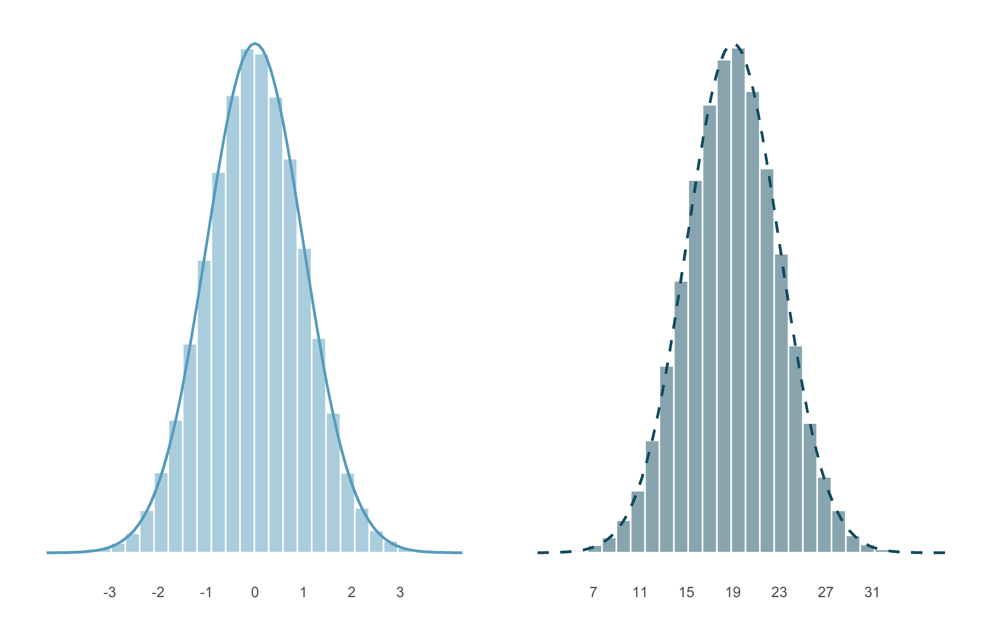
Figure 11.3: Both curves represent the normal distribution; however, they differ in their center and spread. The normal distribution with mean 0 and standard deviation 1 is called the standard normal distribution. The other distribution (green dashed line, on the right) has mean 19 and standard deviation 4.
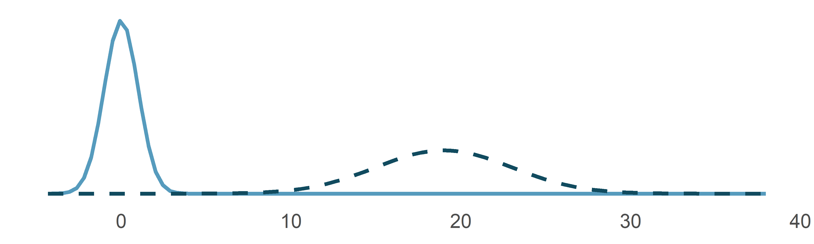
Figure 11.4: The two normal models shown in Figure 11.3 but plotted together on the same scale.
If a normal distribution has mean \(\mu\) and standard deviation \(\sigma,\) we may write the distribution as \(N(\mu, \sigma).\) The two distributions in Figure 11.4 can be written as
\[ N(\mu = 0, \sigma = 1)\quad\text{and}\quad N(\mu = 19, \sigma = 4) \]
Because the mean and standard deviation describe a normal distribution exactly, they are called the distribution’s parameters.
Write down the short-hand for a normal distribution with the following parameters.
- mean 5 and standard deviation 3
- mean -100 and standard deviation 10
- mean 2 and standard deviation 9
- \(N(\mu = 5,\sigma = 3)\)
- \(N(\mu = -100, \sigma = 10)\)
- \(N(\mu = 2, \sigma = 9)\)
11.2.2 Standardizing with Z-scores
SAT scores follow a nearly normal distribution with a mean of 1500 points and a standard deviation of 300 points. ACT scores also follow a nearly normal distribution with mean of 21 points and a standard deviation of 5 points. Suppose Nel scored 1800 points on their SAT and Sian scored 24 points on their ACT. Who performed better?95
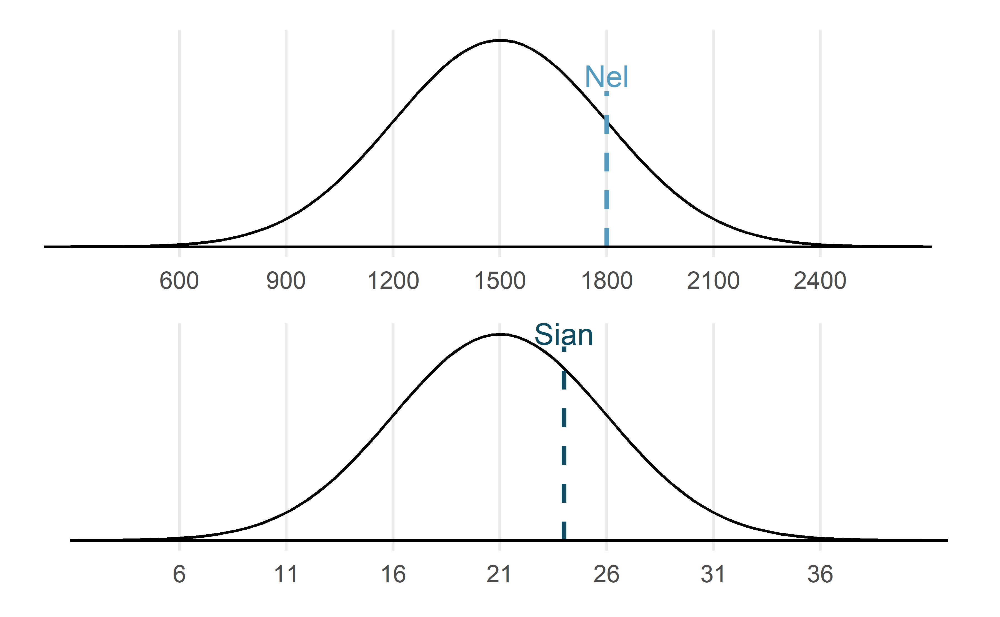
Figure 11.5: Nel’s and Sian’s scores shown with the distributions of SAT and ACT scores.
The solution to the previous example relies on a standardization technique called a Z-score, a method most commonly employed for nearly normal observations (but that may be used with any distribution). The Z-score of an observation is defined as the number of standard deviations it falls above or below the mean. If the observation is one standard deviation above the mean, its Z-score is 1. If it is 1.5 standard deviations below the mean, then its Z-score is -1.5. If \(y\) is an observation from a distribution \(N(\mu, \sigma)\), we define the Z-score mathematically as
\[ Z = \frac{y-\mu}{\sigma} \]
Using \(\mu_{SAT}=1500,\) \(\sigma_{SAT}=300,\) and \(y_{Nel}=1800,\) we find Nel’s Z score:
\[ Z_{Nel} = \frac{y_{Nel} - \mu_{SAT}}{\sigma_{SAT}} = \frac{1800-1500}{300} = 1 \]
The Z-score.
The Z-score of an observation is the number of standard deviations it falls above or below the mean. We compute the Z-score for an observation \(x\) that follows a distribution with mean \(\mu\) and standard deviation \(\sigma\) by first subtracting its mean, then dividing by its standard deviation:
\[Z = \frac{y-\mu}{\sigma}\] If the observation \(y\) comes from a normal distribution centered at \(\mu\) with standard deviation of \(\sigma\), then the Z score will be distributed according to a normal distribution with a center of 0 and a standard deviation of 1. That is, the normality remains when transforming from \(y\) to \(Z\) with a shift in both the center as well as the spread.
Use Sian’s ACT score, 24, along with the ACT mean and standard deviation to compute their Z score.96
Observations above the mean always have positive Z-scores while those below the mean have negative Z-scores. If an observation is equal to the mean (e.g., SAT score of 1500), then the Z-score is \(0\).
Let \(Y\) represent a random variable from \(N(\mu=3, \sigma=2),\) and suppose we observe \(y=5.19.\) Find the Z score of \(y.\) Then, use the Z score to determine how many standard deviations above or below the mean \(y\) falls.
Its Z score is given by \(Z = \frac{y-\mu}{\sigma} = \frac{5.19 - 3}{2} = 2.19/2 = 1.095.\) The observation \(y\) is 1.095 standard deviations above the mean. We know it must be above the mean since \(Z\) is positive.
Head lengths of brushtail possums follow a nearly normal distribution with mean 92.6 mm and standard deviation 3.6 mm. Compute the Z scores for possums with head lengths of 95.4 mm and 85.8 mm.97
We can use Z-scores to roughly identify which observations are more unusual than others. One observation \(y_1\) is said to be more unusual than another observation \(y_2\) if the absolute value of its Z-score is larger than the absolute value of the other observation’s Z-score: \(|Z_1| > |Z_2|\). This technique is especially insightful when a distribution is symmetric.
Which of the two brushtail possum observations in the previous guided practice is more unusual?98
11.2.3 Normal probability calculations in R
Nel from the SAT Guided Practice earned a score of 1800 on their SAT with a corresponding \(Z=1.\) They would like to know what percentile they fall in among all SAT test-takers.
Nel’s percentile is the percentage of people who earned a lower SAT score than Nel. We shade the area representing those individuals in Figure 11.6. The total area under the normal curve is always equal to 1, and the proportion of people who scored below Nel on the SAT is equal to the area shaded in Figure 11.6: 0.8413. In other words, Nel is in the \(84^{th}\) percentile of SAT takers.
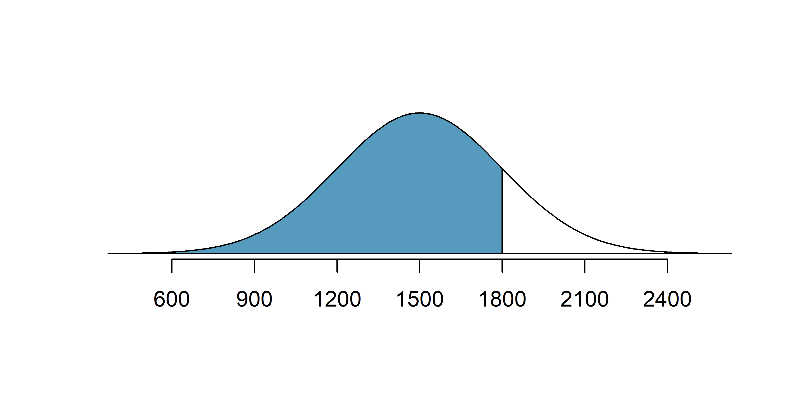
Figure 11.6: The normal model for SAT scores, shading the area of those individuals who scored below Nel.
We can use the normal model to find percentiles or probabilities. A normal probability table, which lists Z-scores and corresponding percentiles, can be used to identify a percentile based on the Z-score (and vice versa). Statistical software can also be used.
Normal probabilities are most commonly found using statistical software which we will show here using R.
We use the software to identify the percentile corresponding to any particular Z-score.
In R, the function to calculate normal probabilities is pnorm().
The normTail() function is available in the openintro R package and will draw the associated curve if it is helpful.
In the code below, we find the percentile of \(Z=0.43\) is 0.6664, or the \(66.64^{th}\) percentile.
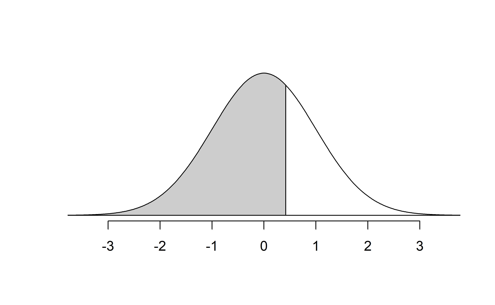
We can also find the Z-score associated with a percentile. For example, to identify Z for the \(80^{th}\) percentile, we use qnorm() which identifies the quantile for a given percentage.
The quantile represents the cutoff value.99 We determine the Z-score for the \(80^{th}\) percentile using qnorm(): 0.84.
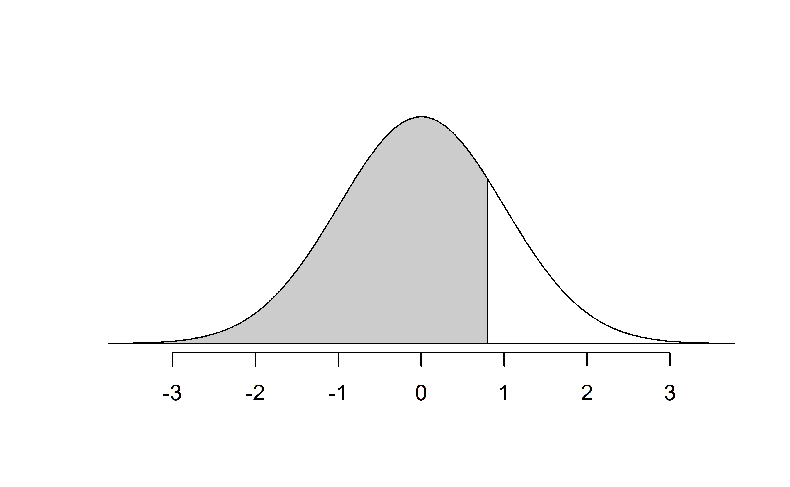
We can use these functions with other normal distributions than the standard normal distribution by specifying the mean as the argument for m and the standard deviation as the argument for s. Here we determine the proportion of ACT test takers who scored worse than Sian on the ACT: 0.73.
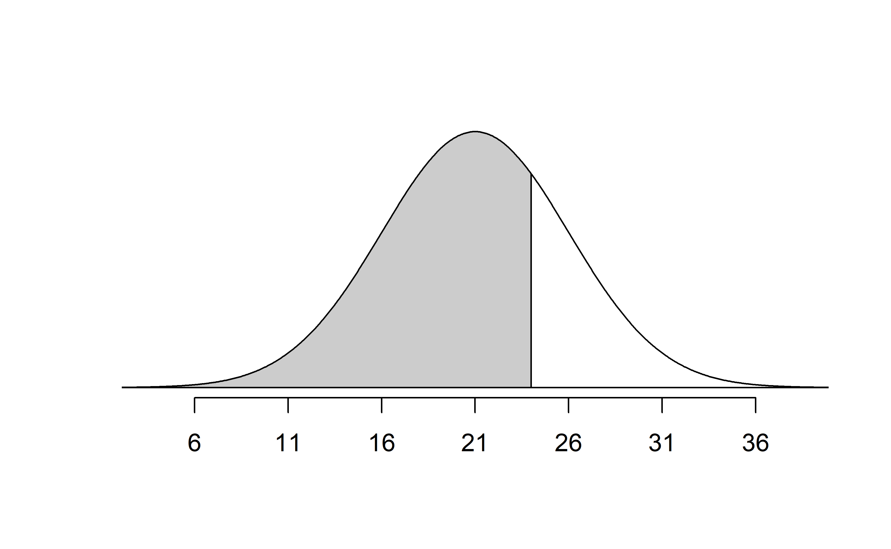
Determine the proportion of SAT test takers who scored better than Nel on the SAT.100
11.2.4 Normal probability examples
Cumulative SAT scores are approximated well by a normal model, \(N(\mu=1500, \sigma=300)\).
Shannon is a randomly selected SAT taker, and nothing is known about Shannon’s SAT aptitude. What is the probability that Shannon scores at least 1630 on her SATs?
First, always draw and label a picture of the normal distribution. (Drawings need not be exact to be useful.) We are interested in the chance she scores above 1630, so we shade the upper tail. See the normal curve below.
The \(x\)-axis identifies the mean and the values at 2 standard deviations above and below the mean. The simplest way to find the shaded area under the curve makes use of the Z score of the cutoff value. With \(\mu=1500,\) \(\sigma=300,\) and the cutoff value \(x=1630,\) the Z score is computed as
\[ Z = \frac{y - \mu}{\sigma} = \frac{1630 - 1500}{300} = \frac{130}{300} = 0.43. \] We use software to find the percentile of \(Z=0.43\), which yields 0.6664. However, the percentile describes those who had a Z-score lower than 0.43. To find the area above \(Z=0.43\), we compute one minus the area of the lower tail, as seen below.
The probability Shannon scores at least 1630 on the SAT is 0.3336. This calculation is visualized in Figure 11.7.
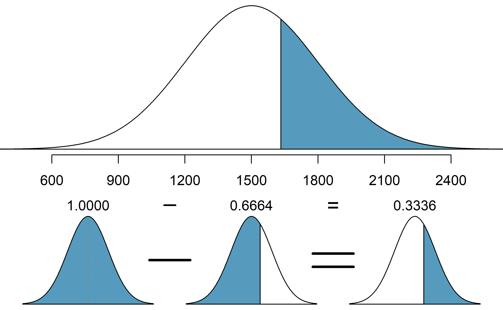
Figure 11.7: Visual calculation of the probability that Shannon scores at least 1630 on the SAT.
Always draw a picture first, and find the Z-score second.
For any normal probability situation, always always always draw and label the normal curve and shade the area of interest first. The picture will provide an estimate of the probability.
After drawing a figure to represent the situation, identify the Z-score for the observation of interest.
If the probability of Shannon scoring at least 1630 is 0.3336, then what is the probability she scores less than 1630? Draw the normal curve representing this exercise, shading the lower region instead of the upper one.101
Edward earned a 1400 on his SAT. What is his percentile?
First, a picture is needed. Edward’s percentile is the proportion of people who do not get as high as a 1400. These are the scores to the left of 1400.
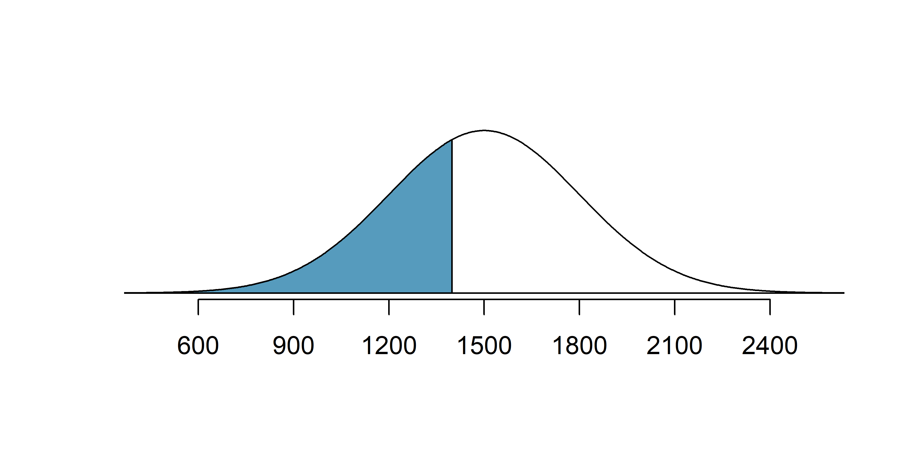
The mean \(\mu=1500,\) the standard deviation \(\sigma=300,\) and the cutoff for the tail area \(x=1400\) are used to compute the Z score:
\[ Z = \frac{y - \mu}{\sigma} = \frac{1400 - 1500}{300} = -0.33\]
Statistical software can be used to find the proportion of the \(N(0,1)\) curve to the left of \(-0.33\) which is 0.3707. Edward is at the \(37^{th}\) percentile.
Use the results of the previous example to compute the proportion of SAT takers who did better than Edward. Also draw a new picture.
If Edward did better than 37% of SAT takers, then about 63% must have done better than them.
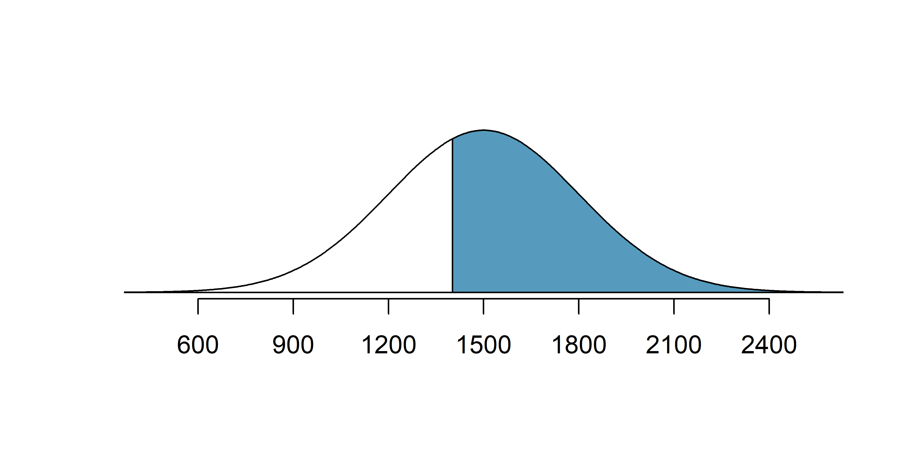
Areas to the right.
The pnorm() function (and the normal probability table in most books) gives the area to the left. If you would like the area to the right, first find the area to the left and then subtract this amount from one.
In R, you can also do this by setting the lower.tail argument to FALSE.
Stuart earned an SAT score of 2100. Draw a picture for each part. (a) What is their percentile? (b) What percent of SAT takers did better than Stuart?102
Based on a sample of 100 men,103 the heights of adults who identify as male, between the ages 20 and 62 in the US is nearly normal with mean 70.0’’ and standard deviation 3.3’’.
Kamron is 5’7’’ (67 inches) and Adrian is 6’4’’ (76 inches). (a) What is Kamron’s height percentile? (b) What is Adrian’s height percentile? Also draw one picture for each part.
Numerical answers, calculated using statistical software (e.g., pnorm() in R): (a) 18.17th percentile.
(b) 96.55th percentile.
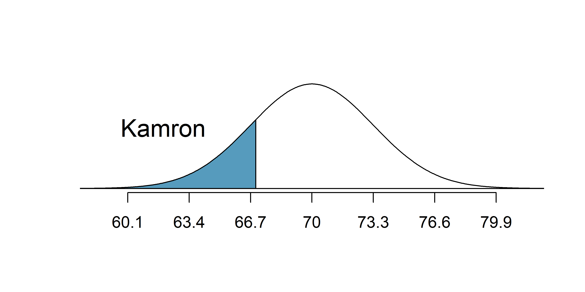
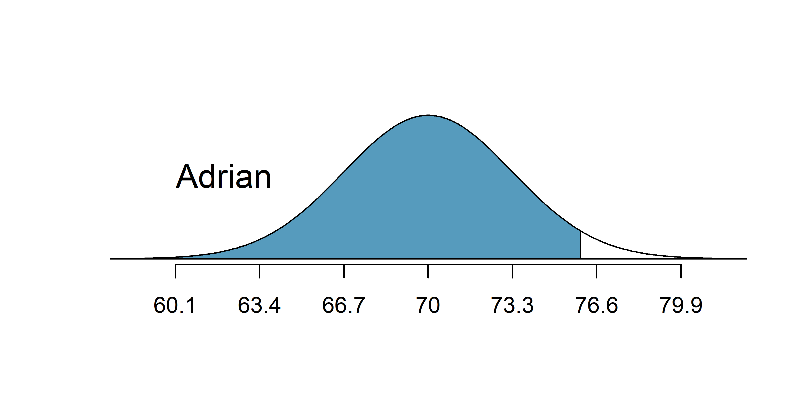
The last several problems have focused on finding the probability or percentile for a particular observation. What if you would like to know the observation corresponding to a particular percentile?
Erik’s height is at the \(40^{th}\) percentile. How tall is he?
As always, first draw the picture.
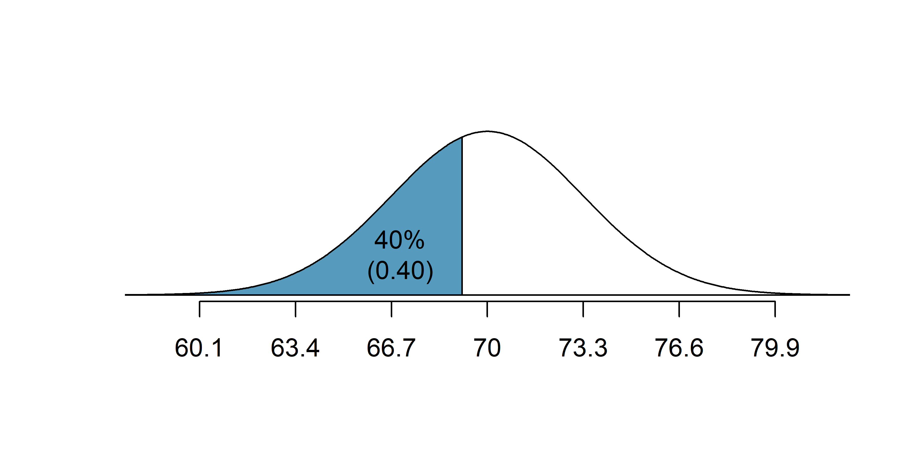
In this case, the lower tail probability is known (0.40), which can be shaded on the diagram. We want to find the observation that corresponds to this value. As a first step in this direction, we determine the Z-score associated with the \(40^{th}\) percentile.
Because the percentile is below 50%, we know \(Z\) will be negative. Statistical software provides the \(Z\) value to be \(-0.25.\)
Knowing \(Z_{Erik}=-0.25\) and the population parameters \(\mu=70\) and \(\sigma=3.3\) inches, the Z-score formula can be set up to determine Erik’s unknown height, labeled \(x_{Erik}\): \[\begin{eqnarray*} -0.25 = Z_{Erik} = \frac{y_{Erik} - \mu}{\sigma} = \frac{y_{Erik} - 70}{3.3} \end{eqnarray*}\] Solving for \(y_{Erik}\) yields the height 69.18 inches. That is, Erik is about 5’9’’ (this is notation for 5-feet, 9-inches).
What is the adult male height at the \(82^{nd}\) percentile?
Again, we draw the figure first.
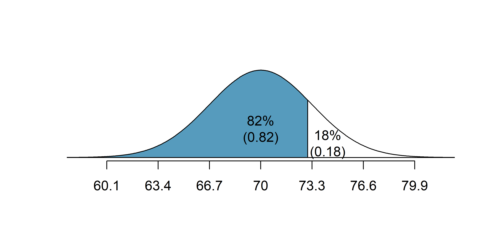
And calculate the Z value associated with the \(82^{nd}\) percentile:
Next, we want to find the Z-score at the \(82^{nd}\) percentile, which will be a positive value (because the percentile is bigger than 50%).
Using qnorm(), the \(82^{nd}\) percentile corresponds to \(Z=0.92\). Finally, the height \(y\) is found using the Z-score formula with the known mean \(\mu\), standard deviation \(\sigma\), and Z-score \(Z=0.92\): \[\begin{eqnarray*}
0.92 = Z = \frac{y-\mu}{\sigma} = \frac{y - 70}{3.3}
\end{eqnarray*}\] This yields 73.04 inches or about 6’1’’ as the height at the \(82^{nd}\) percentile.
- What is the \(95^{th}\) percentile for SAT scores?
- What is the \(97.5^{th}\) percentile of the male heights? As always with normal probability problems, first draw a picture.104
- What is the probability that a randomly selected male adult is at least 6’2’’ (74 inches)?
- What is the probability that a male adult is shorter than 5’9’’ (69 inches)?105 :::
What is the probability that a randomly selected adult male is between 5’9’’ and 6’2’’?
These heights correspond to 69 inches and 74 inches. First, draw the figure. The area of interest is no longer an upper or lower tail.
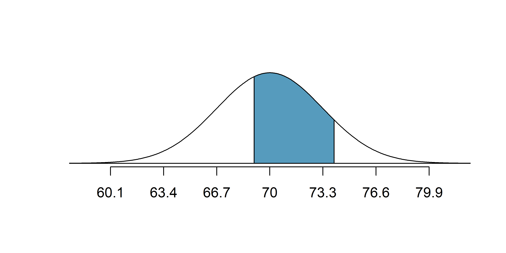
The total area under the curve is 1. If we find the area of the two tails that are not shaded (from the previous Guided Practice, these areas are \(0.3821\) and \(0.1131\)), then we can find the middle area:
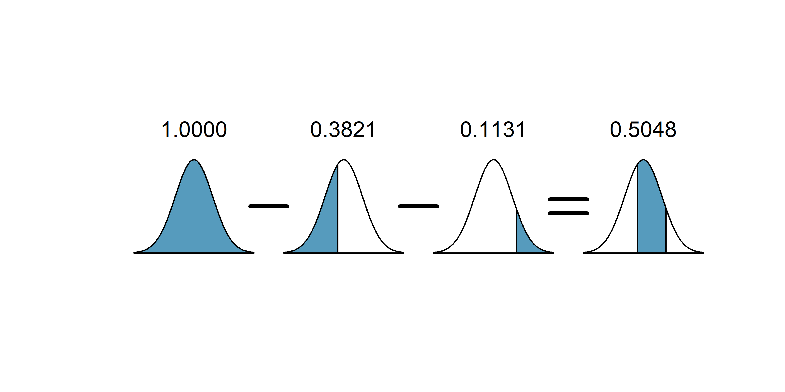
That is, the probability of being between 5’9’’ and 6’2’’ is 0.5048.
What percent of SAT takers get between 1500 and 2000?106
What percent of adult males are between 5’5’’ and 5’7’’?107
11.2.5 68-95-99.7 rule
Here, we present a useful general rule for the probability of falling within 1, 2, and 3 standard deviations of the mean in the normal distribution. The rule will be useful in a wide range of practical settings, especially when trying to make a quick estimate without a calculator or Z table.
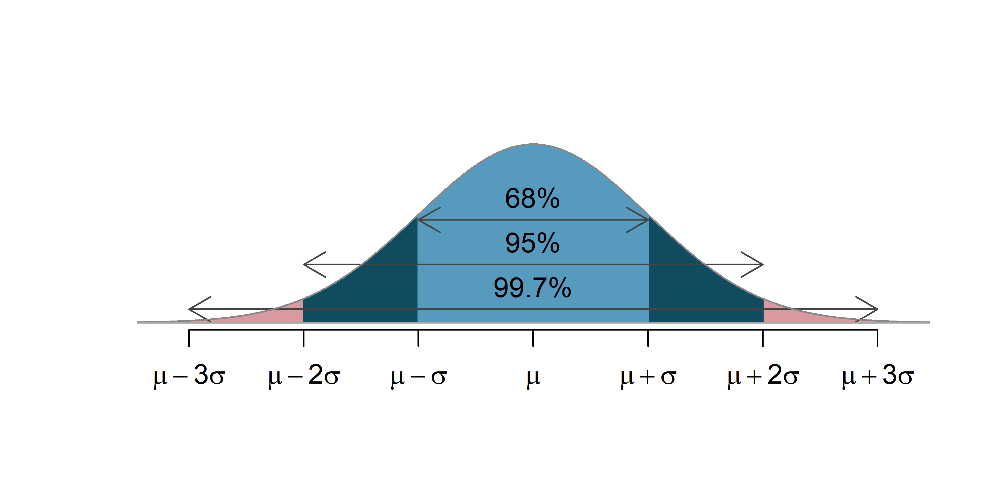
Figure 11.8: Probabilities for falling within 1, 2, and 3 standard deviations of the mean in a normal distribution.
Use pnorm() to confirm that about 68%, 95%, and 99.7% of observations fall within 1, 2, and 3, standard deviations of the mean in the normal distribution, respectively. For instance, first find the area that falls between \(Z=-1\) and \(Z=1\), which should have an area of about 0.68. Similarly there should be an area of about 0.95 between \(Z=-2\) and \(Z=2\).108
It is possible for a normal random variable to fall 4, 5, or even more standard deviations from the mean. However, these occurrences are very rare if the data are nearly normal. The probability of being further than 4 standard deviations from the mean is about 1-in-30,000. For 5 and 6 standard deviations, it is about 1-in-3.5 million and 1-in-1 billion, respectively.
SAT scores closely follow the normal model with mean \(\mu = 1500\) and standard deviation \(\sigma = 300.\) About what percent of test takers score 900 to 2100? What percent score between 1500 and 2100 ?109
11.3 Quantifying the variability of a statistic
As seen in later chapters, it turns out that many of the statistics used to summarize data (e.g., the sample proportion, the sample mean, differences in two sample proportions, differences in two sample means, the sample slope from a linear model, etc.) vary according to the normal distribution seen above. The mathematical models are derived from the normal theory, but even the computational methods (and the intuitive thinking behind both approaches) use the general bell-shaped variability seen in most of the distributions constructed so far.
11.3.1 Standard error
Theory-based methods also give us mathematical expressions for the standard deviation of a sampling distribution. For instance, if the true population proportion is \(\pi\), then the standard deviation of the sampling distribution of sample proportions—how far away we would expect a sample proportion to be away from the population proportion—is110 \[ SD(\hat{p}) = \sqrt{\frac{\pi(1-\pi)}{n}}. \] Typically, values of parameters such as \(\pi\) are unknown, so we are unable to calculate these standard deviations. In this case, we substitute our “best guess” for \(\pi\) in the formulas, either from a hypothesis or from a point estimate.
Standard error.
The standard deviation of a sampling distribution for a statistic, denoted by \(SD\)(statistic), represents how far away we would expect the statistic to land from the parameter.
Since the formulas for these standard deviations depend on unknown parameters, we substitute our “best guess” for these unknown parameters (our observed statistics) in the formulas, either from a hypothesis or from a point estimate. The resulting estimated standard deviation is called the standard error of the statistic, denoted by \(SE\)(statistic).
For example, the standard error of a sample proportion is \[ SE(\hat{p}) = \sqrt{\frac{\hat{p}(1-\hat{p})}{n}}. \]
11.3.2 Margin of error
We will explore both simulation-based methods (bootstrapping) and theory-based methods for creating confidence intervals in this text. Though the details change with different scenarios, theory-based confidence intervals will always take the form: \[ \mbox{statistic} \pm (\mbox{multiplier}) \times (\mbox{standard error of the statistic}) \] The statistic is our best guess for the value of the parameter, so it makes sense to build the confidence interval around that value. The standard error, which is a measure of the uncertainty associated with the statistic, provides a guide for how large we should make the confidence interval. The multiplier is determined by how confident we’d like to be, and tells us how many standard errors we need to add and subtract from the statistic. The amount we add and subtract from the statistic is called the margin of error.
General form of a confidence interval.
The general form of a theory-based confidence interval for an unknown parameter is \[ \mbox{statistic} \pm (\mbox{multiplier}) \times (\mbox{standard error of the statistic}) \] The amount we add and subtract to the statistic to calculate the confidence interval is called the margin of error. \[ \mbox{margin of error} = (\mbox{multiplier}) \times (\mbox{standard error of the statistic}) \]
The margin of error describes the variability associated with a given percentage of all sampled statistics.
For example, to describe where most (i.e., 95%) observations lie, we say that the margin of error is approximately \(2 \times SE\).
That is, 95% of the sampled statistics are within one margin of error of their mean.
Notice that if the spread of the observations goes from some lower bound to some upper bound, a rough approximation of the SE is to divide the range by 4.
That is, if you notice the sample proportions go from 0.1 to 0.4, the SE can be approximated to be 0.075.
In Section 14.3 we will discuss different percentages for the confidence interval (e.g., 90% confidence interval or 99% confidence interval). Section 15.2 provides a longer discussion on what “95% confidence” actually means.
11.4 Chapter review
- A theory-based confidence interval is always of the form: \(\mbox{statistic} \pm (\mbox{multiplier}) \times (\mbox{standard error of the statistic})\). The amount we add and subtract to the statistic ((multiplier) \(\times\) (standard error of the statistic)) is called the margin of error. The mathematical model for the sampling variability of a sample proportion or difference in sample proportions is the normal distribution, which is due to the Central Limit Theorem.
Terms
We introduced the following terms in the chapter. If you’re not sure what some of these terms mean, we recommend you go back in the text and review their definitions. We are purposefully presenting them in alphabetical order, instead of in order of appearance, so they will be a little more challenging to locate. However you should be able to easily spot them as bolded text.
| Central Limit Theorem | normal probability table | standard error |
| margin of error | null distribution | standard normal distribution |
| normal curve | parameter | Z-score |
| normal distribution | percentile | |
| normal model | sampling distribution |
Data distributions are also sometimes referred to as “sample distributions.” But since “sample distributions” and “sampling distributions” are very different concepts—one is a distribution of a variable measured on observational units (sample distribution), and the other is a distribution of a summary statistic measured on samples (sampling distribution)—we choose to use “data distribution” to further distinguish this difference.↩︎
In general, the distributions are reasonably symmetric, though the case study for the medical consultant has a distribution that is slightly skewed right.↩︎
We will see in later chapters that the Central Limit Theorem is much more general than sample proportions. In fact, under certain conditions, the Central Limit Theorem guarantees that most of the statistics we encounter in this textbook will have an approximately normal sampling distribution: sample proportions, means, differences in proportions, differences in means, and paired mean differences.↩︎
It is also introduced as the Gaussian distribution after Frederic Gauss, the first person to formalize its mathematical expression.↩︎
We use the standard deviation as a guide. Nel is 1 standard deviation above average on the SAT: \(1500 + 300 = 1800.\) Sian is 0.6 standard deviations above the mean on the ACT: \(21+0.6 \times 5 = 24.\) In Figure 11.5, we can see that Nel did better compared to other test takers than Sian did, so their score was better.↩︎
\(Z_{Sian} = \frac{y_{Sian} - \mu_{ACT}}{\sigma_{ACT}} = \frac{24 - 21}{5} = 0.6\)↩︎
For \(y_1=95.4\) mm: \(Z_1 = \frac{y_1 - \mu}{\sigma} = \frac{95.4 - 92.6}{3.6} = 0.78.\) For \(y_2=85.8\) mm: \(Z_2 = \frac{85.8 - 92.6}{3.6} = -1.89.\)↩︎
Because the absolute value of Z score for the second observation is larger than that of the first, the second observation has a more unusual head length.↩︎
To remember the function
qnorm()as providing a cutoff, notice that bothqnorm()and “cutoff” start with the sound “kuh”. To remember thepnorm()function as providing a probability from a given cutoff, notice that bothpnorm()and probability start with the sound “puh”.↩︎If 84% had lower scores than Nel, the number of people who had better scores must be 16%. (Generally ties are ignored when the normal model, or any other continuous distribution, is used.)↩︎
We found the probability to be 0.6664. A picture for this exercise is represented by the shaded area below “0.6664”.↩︎
Numerical answers: (a) 0.9772. (b) 0.0228.↩︎
This sample was taken from the USDA Food Commodity Intake Database.↩︎
Remember: draw a picture first, then find the Z-score. (We leave the pictures to you.) The Z-score can be found by using the percentiles and the normal probability table. (a) We look for 0.95 in the probability portion (middle part) of the normal probability table, which leads us to row 1.6 and (about) column 0.05, i.e., \(Z_{95}=1.65\). Knowing \(Z_{95}=1.65\), \(\mu = 1500\), and \(\sigma = 300\), we setup the Z-score formula: \(1.65 = \frac{y_{95} - 1500}{300}\). We solve for \(y_{95}\): \(y_{95} = 1995\). (b) Similarly, we find \(Z_{97.5} = 1.96\), again setup the Z-score formula for the heights, and calculate \(y_{97.5} = 76.5\).↩︎
Numerical answers: (a) 0.1131. (b) 0.3821.↩︎
This is an abbreviated solution. (Be sure to draw a figure!) First find the percent who get below 1500 and the percent that get above 2000: \(Z_{1500} = 0.00 \to 0.5000\) (area below), \(Z_{2000} = 1.67 \to 0.0475\) (area above). Final answer: \(1.0000-0.5000 - 0.0475 = 0.4525.\)↩︎
5’5’’ is 65 inches. 5’7’’ is 67 inches. Numerical solution: \(1.000 - 0.0649 - 0.8183 = 0.1168,\) i.e., 11.68%.↩︎
First draw the pictures. To find the area between \(Z=-1\) and \(Z=1\), use
pnorm()to determine the areas below \(Z=-1\) and above \(Z=1\). Next verify the area between \(Z=-1\) and \(Z=1\) is about 0.68. Repeat this for \(Z=-2\) to \(Z=2\) and also for \(Z=-3\) to \(Z=3\).↩︎900 and 2100 represent two standard deviations above and below the mean, which means about 95% of test takers will score between 900 and 2100. Since the normal model is symmetric, then half of the test takers from part (a) (\(\frac{95\%}{2} = 47.5\%\) of all test takers) will score 900 to 1500 while 47.5% score between 1500 and 2100.↩︎
The notation \(SD(\hat{p})\) is function notation — we are applying the standard deviation function (\(SD\)) to the statistic \(\hat{p}\). This notation does not mean to multiply \(SD\) by \(\hat{p}\).↩︎